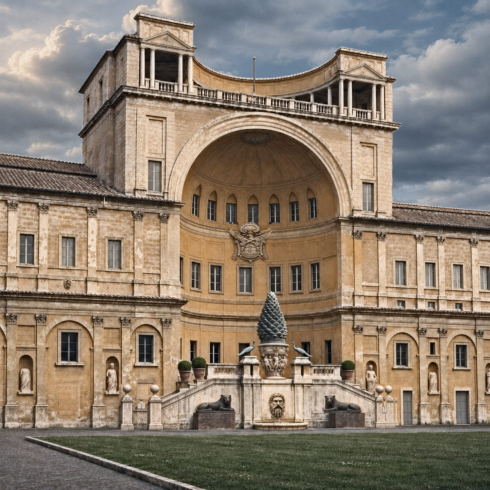
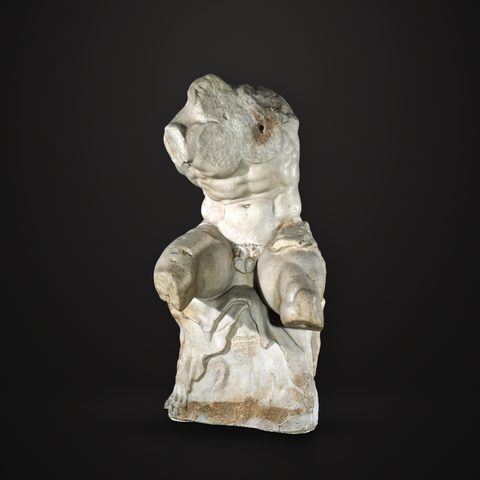
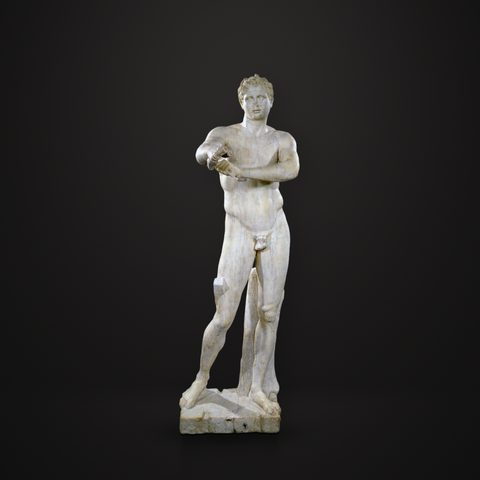
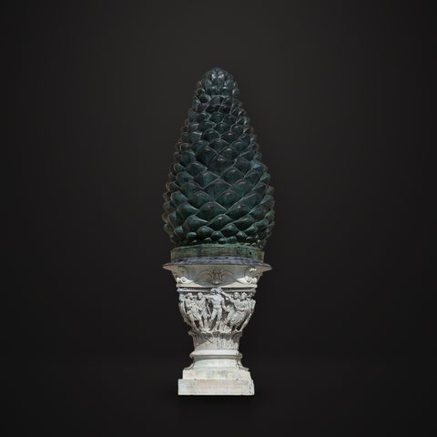
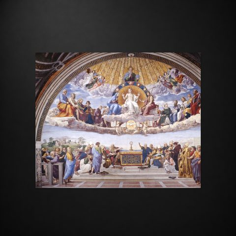
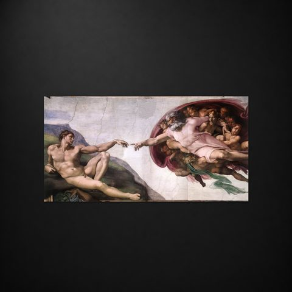
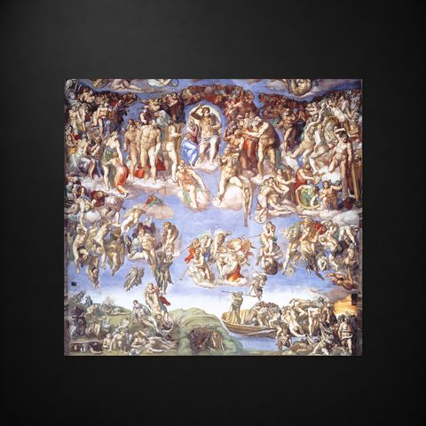
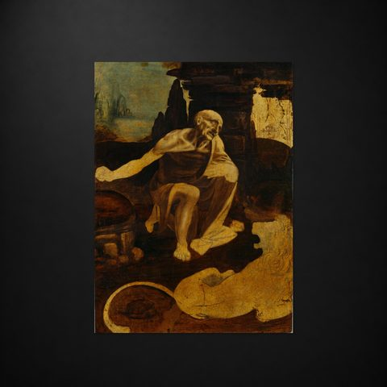

梵蒂岡博物館中文語音導覽
梵蒂岡 · 梵蒂岡城 · Musei Vaticani
676 件館藏，每件都有中文解說
從《拉奧孔》《觀景殿的阿波羅》，到拉斐爾畫室的《雅典學院》、西斯汀禮拜堂的《創造亞當》《最後的審判》，梵蒂岡博物館的古典雕塑、壁畫和繪畫館藏，每一件都有中文導覽。
- 國語（台灣）
- 粵語（香港）
- 普通話（內地）
在 App Store 下載
App 免費下載，每座博物館單獨購買，一次購買永久使用。目前在台灣、香港、澳門、新加坡、馬來西亞、英國、美國、加拿大、澳洲、紐西蘭、挪威、瑞士的 App Store 提供，暫未在中國大陸上架。
解說包含這些名作
 拉奧孔與兒子們艾格桑德、阿提諾多洛斯、波利多魯斯（傳）
拉奧孔與兒子們艾格桑德、阿提諾多洛斯、波利多魯斯（傳） 觀景殿的阿波羅羅馬工坊（仿希臘青銅原型）
觀景殿的阿波羅羅馬工坊（仿希臘青銅原型）
觀景殿殘軀雅典人阿波羅尼奧斯（署名）
刮汗汙者羅馬雕刻者（仿利西波斯） 勝利的柏修斯安東尼歐·卡諾瓦
勝利的柏修斯安東尼歐·卡諾瓦 聖海倫娜石棺古羅馬
聖海倫娜石棺古羅馬 普里馬波爾塔的奧古斯都像古羅馬
普里馬波爾塔的奧古斯都像古羅馬
青銅松果普布利烏斯·辛基烏斯·薩爾維烏斯（署名） 雅典學院拉斐爾（及工坊）
雅典學院拉斐爾（及工坊）
聖禮之爭拉斐爾 帕納索斯山拉斐爾
帕納索斯山拉斐爾 博爾戈火災拉斐爾（及工坊）
博爾戈火災拉斐爾（及工坊）
創造亞當米開朗基羅
最後的審判米開朗基羅 斯特凡內斯基三聯畫喬托（及助手）
斯特凡內斯基三聯畫喬托（及助手） 彈魯特琴的天使美洛佐·達·弗利
彈魯特琴的天使美洛佐·達·弗利
荒野中的聖傑羅姆達文西 福利尼奧聖母拉斐爾
福利尼奧聖母拉斐爾 基督顯聖容拉斐爾
基督顯聖容拉斐爾 基督下葬卡拉瓦喬
基督下葬卡拉瓦喬……還有更多，共 676 件。
三種中文，聽你最熟悉的那一種
- 國語（台灣）台灣口音解說，繁體中文講稿。
- 粵語（香港）道地廣東話解說，講稿也以廣東話書寫，繁體中文。
- 普通話（內地）標準普通話解說，簡體中文講稿。
參觀小提醒
- 出發前在 Wi-Fi 下把梵蒂岡博物館整館導覽下載好，館內沒有網路也能用。
- 帶上耳機，在展廳裡不打擾別人。
- 看到有興趣的作品，舉起手機對準就能辨識；也可以在作品列表依名稱搜尋。